ISL Studio
A working Indian Sign Language practice platform combining webcam gesture recognition and interactive feedback for beginner ISL learners.
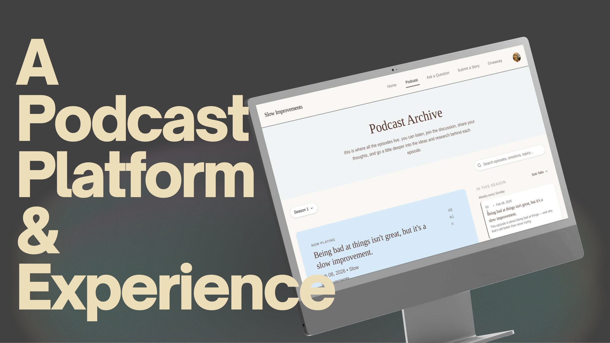
Slow Improvements is a mindfulness and self-growth podcast exploring the idea that meaningful personal growth does not need to happen instantly. Through thoughtful conversations and structured episodes, it explores everyday challenges, habits, mindset and personal development.
Alongside the podcast, I designed a dedicated podcast platform that extends the listening experience beyond audio. Designed initially around Slow Improvements, the platform brings together episodes, research references, transcripts, chapter breakdowns and community discussions. Its underlying concept and experience are adaptable to other podcasts as well.
The project therefore brings together two connected design outcomes: the creation of the podcast itself and the design of a companion podcast platform.
A mindfulness and self-growth podcast with its own identity, content, episodes and structure, exploring personal growth, habits, mindset and everyday challenges.
A dedicated digital platform designed specifically to support this podcast, but built around a concept and functionality that could be adapted for other podcasts too.
Podcast listening platforms often focus on delivering audio or video content, leaving little room for listeners to understand the research behind an episode or meaningfully engage with its ideas and community. There is a gap between simply consuming a podcast and being able to explore, question, discuss, and contribute to the conversations it introduces.
The project began with an in-depth exploration of the health and wellness space, initially focusing heavily on manifestation. As patterns emerged, the research naturally expanded into the broader themes of self-growth and mindfulness.
The process involved collecting information, processing patterns, identifying observations, and translating those observations into insights that could guide the final direction.
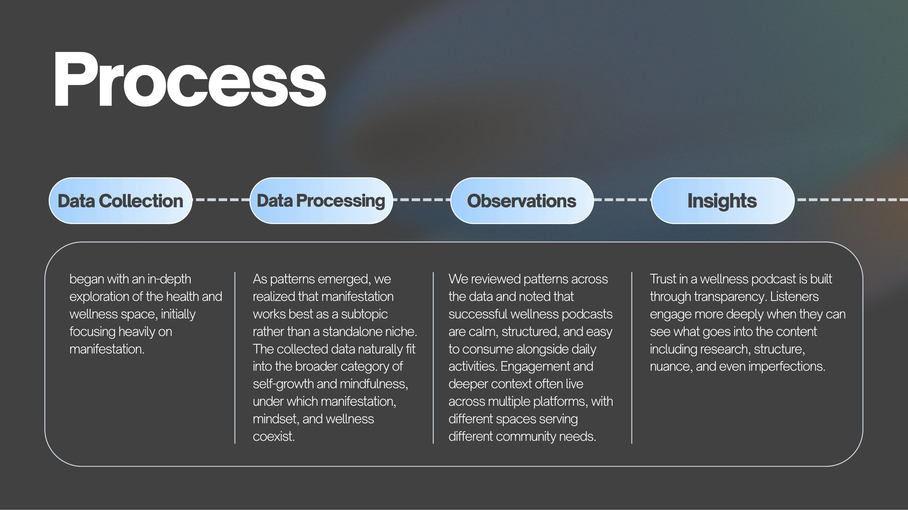
A collection of frameworks and strategic exercises used to explore stakeholder perspectives, uncover underlying challenges, map relationships and establish the values guiding the project.
A lot of research goes into making a good podcast. To cover different topics thoughtfully and actually communicate what matters, you need more than just ideas, you need structure.
That’s why I came up with one. It helps shape the research into conversations that flow, make sense, and keep listeners engaged from start to finish.
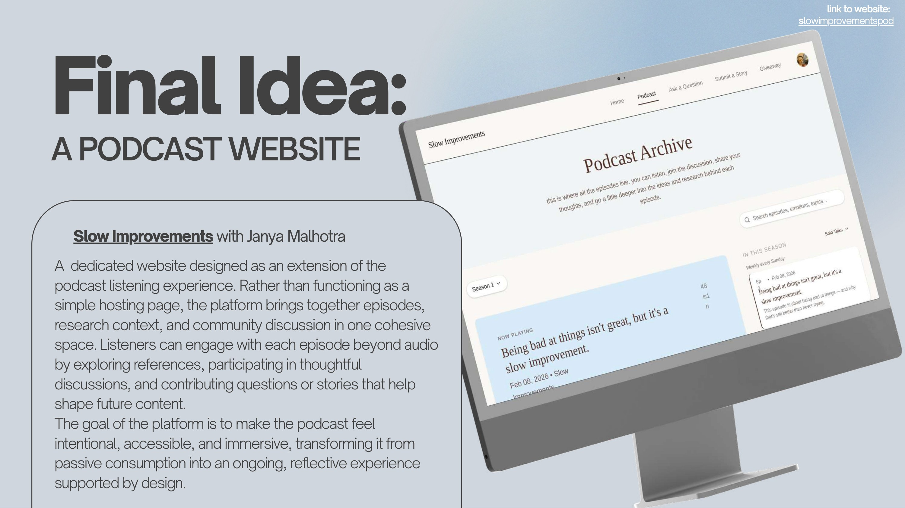
The visual and communicative direction bridges casual conversational intimacy with editorial structure, balancing content discovery with genuine community interaction.
The podcast follows a series of connected topics that explore small but meaningful improvements in everyday life. Each episode addresses a different barrier to personal growth, moving from physical environments to mental pressure and finally to the fear of trying.
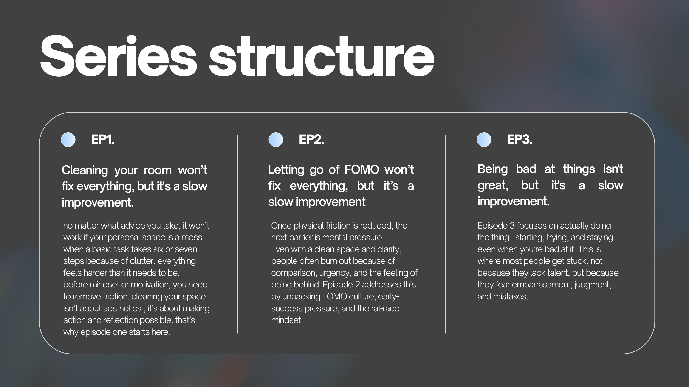
Each episode follows a deliberate four-part progression: 01 Intro, 02 The Why?, 03 The How., and 04 Closing Thoughts.
The companion web platform transforms the podcast into an interactive, multi-dimensional space, supporting deep content exploration, audience input, and ethical community action.
The home page introduces the podcast, its core philosophies, and recent activities while highlighting essential community focus areas.
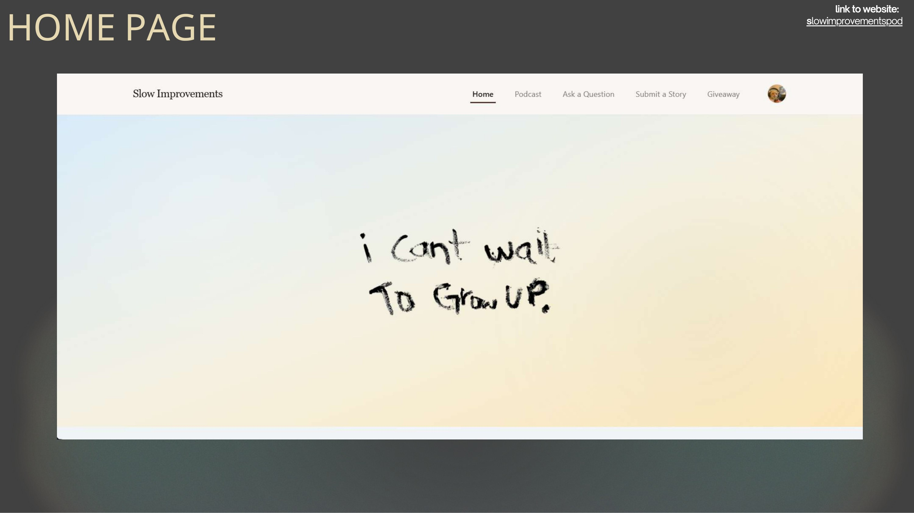
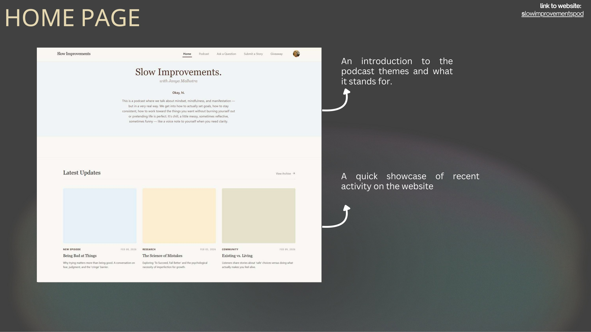
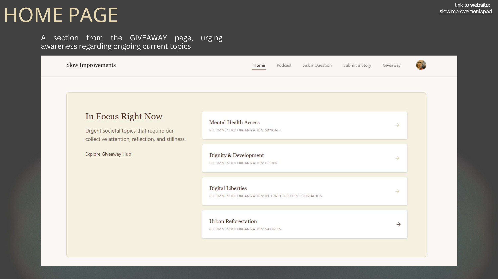
The archive provides a structured way to browse episodes with season filtering, an integrated audio player, and deep transcript breakdowns.
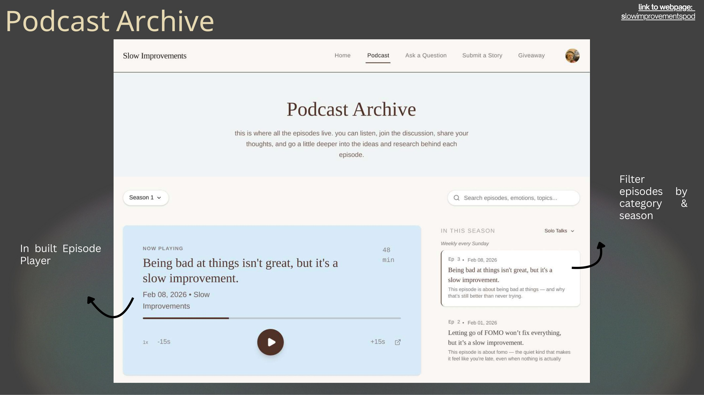
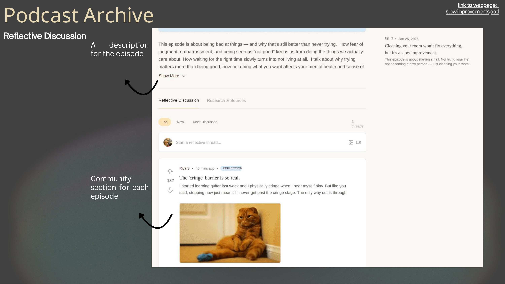
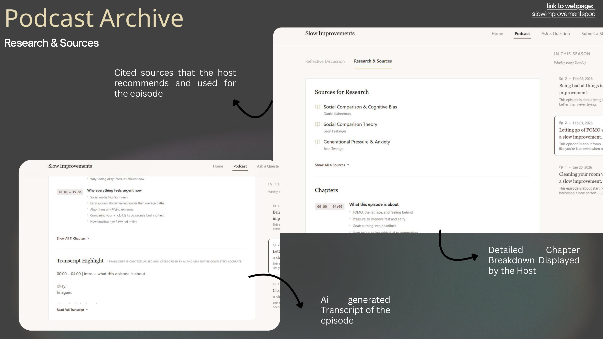
Allows listeners to submit specific questions directly, directly influencing conversation topics in future episodes.
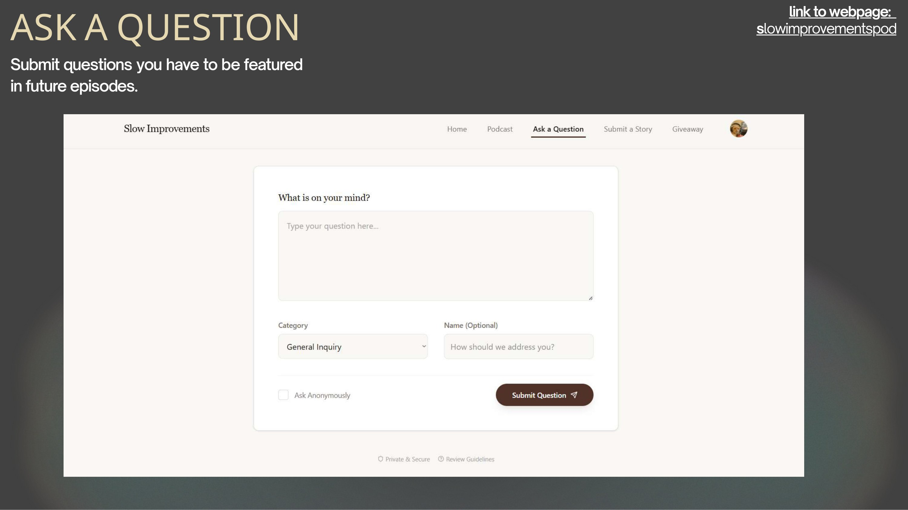
Enables audience members to share personal life narratives and dilemmas to receive thoughtful second opinions on air.
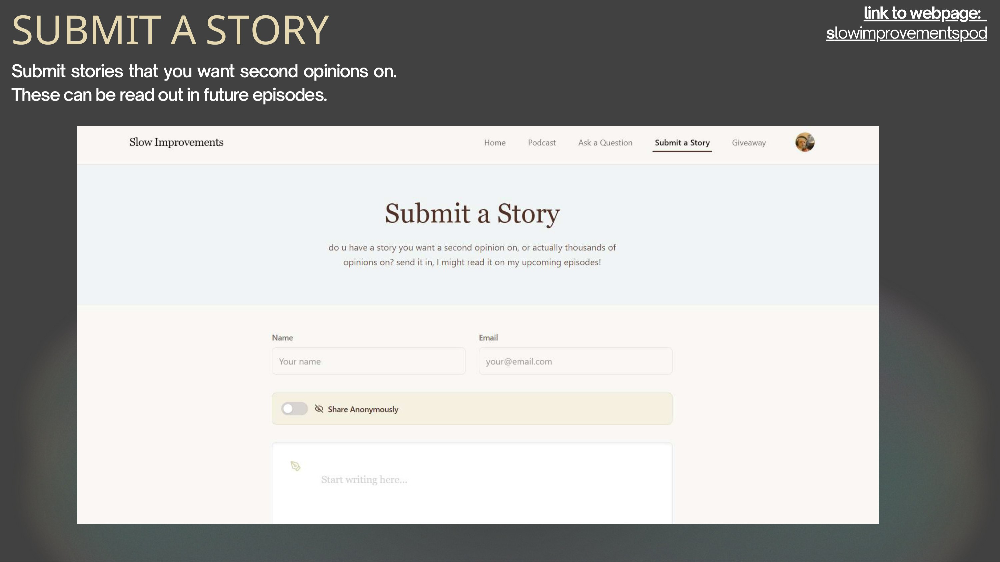
Highlights meaningful organizations, causes, and mutual aid efforts that warrant listener attention and community support.
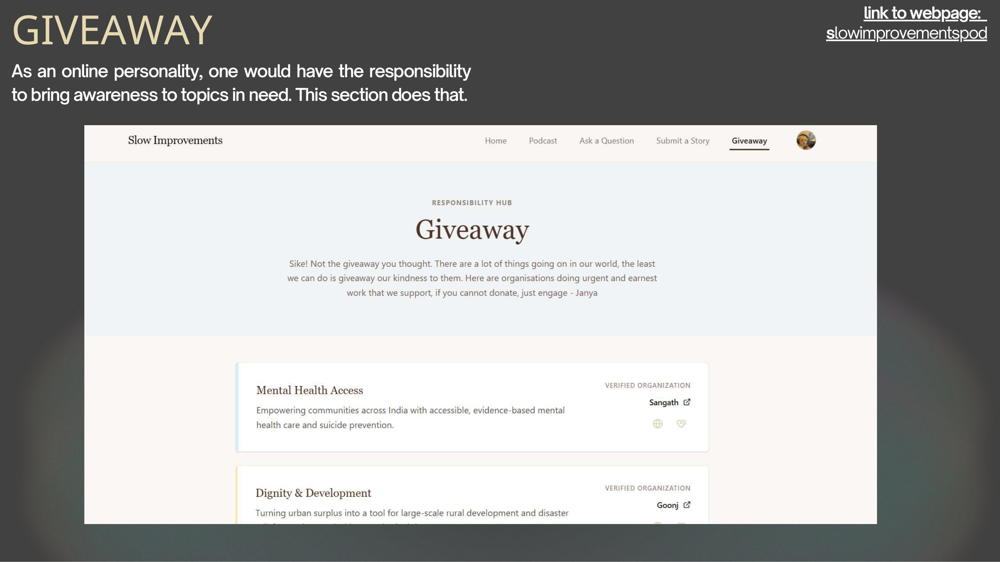
A personal space where listeners track saved episodes, review past submitted questions, and revisit their submitted stories.
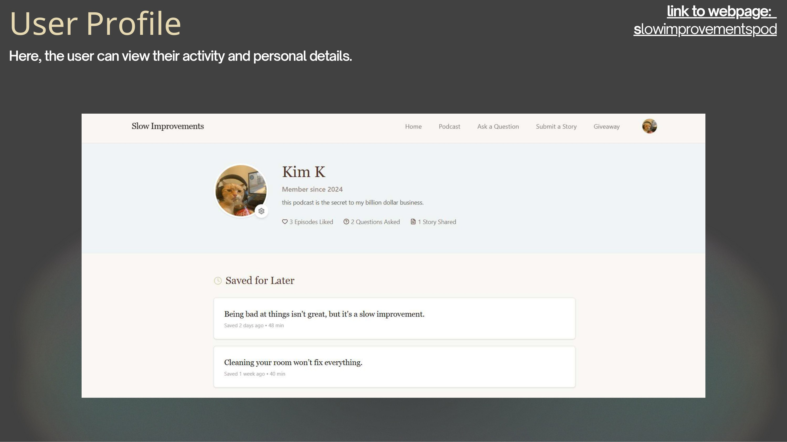
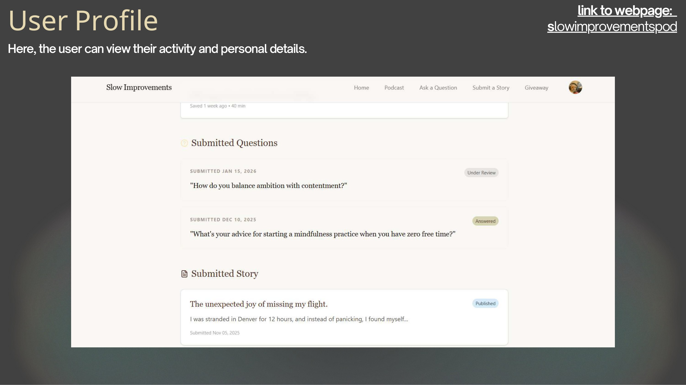
Slow Improvements bridges the divide between audio consumption and active personal reflection. By structuring intentional conversations and supporting them with an open, accessible digital platform, the project creates an ongoing, reflective experience guided by transparency and community participation.
A working Indian Sign Language practice platform combining webcam gesture recognition and interactive feedback for beginner ISL learners.

An interactive image-making tool exploring variable-based visuals, creative experimentation and flexible visual treatments.

A Financial Literacy App designed to help young adults to know about finance literacy through games, fun articles, blogs, and reels.

A board game for 2–5 players that encourages people to get to know one another through questions, strategy and play.

This Vertical Farm Mobile Van business is designed to bridge the gap between locally grown, fresh produce and urban consumers, creating direct access between vertical farms and the community.